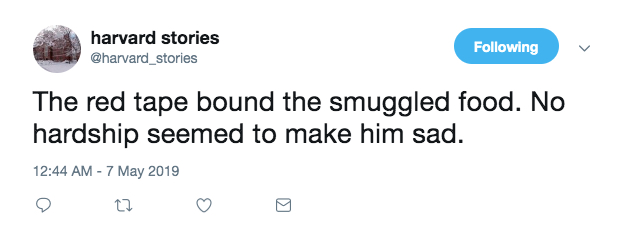
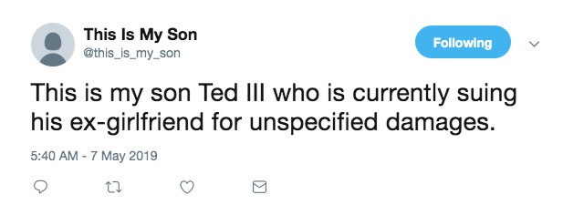

twitter bots
harvard stories
a twitter bot that tries to make short stories out of the harvard sentences. https://twitter.com/harvard_stories
several years ago i was thinking a lot about randomness and narrative and took a deck of cards and wrote out a different sentence or phrase on each one with the idea that you could shuffle the deck, draw two or three cards, and it would read like a short story. a few years later when i first found out about the harvard sentences, a series of phonetically-balanced sentences originally developed in the 1940’s to test radio equipment and expanded upon through the 1960’s, i thought it would be a good set of sentences to randomly combine to form stories. this bot was made with tracery and is hosted on cheap bots, done quick!
this is my son
a twitter bot that is constantly introducing its large adult son. https://twitter.com/this_is_my_son
made shortly after reading jia tolentino’s the land of the large adult son. i thought the idea of a very powerful person introducing their large adult son to a business acquaintance or whatever was a hilarious conceit and went really deep in tracery; this is by far the most complicated bot i’ve built. it’s made with tracery and hosted on cheap bots, done quick!
